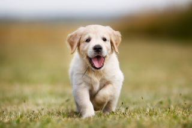
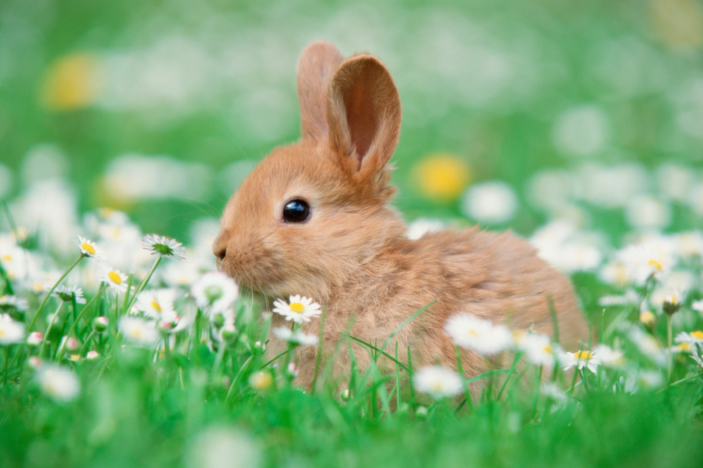

puppies
A puppy is a juvenile dog. Some puppies can weigh 1–1.5 kg (1-3 lb), while larger ones can weigh up to 7–11 kg (15-23 lb). All healthy puppies grow quickly after birth. A puppy's coat color may change as the puppy grows older, as is commonly seen in breeds such as the Yorkshire Terrier. Puppy refers specifically to young dogs,[1] while pup may be used for other animals such as wolves, seals, giraffes, guinea pigs, rats or sharks.
Kittens

A puppy is a juvenile dog. Some puppies can weigh 1–1.5 kg (1-3 lb), while larger ones can weigh up to 7–11 kg (15-23 lb). All healthy puppies grow quickly after birth. A puppy's coat color may change as the puppy grows older, as is commonly seen in breeds such as the Yorkshire Terrier. Puppy refers specifically to young dogs,[1] while pup may be used for other animals such as wolves, seals, giraffes, guinea pigs, rats or sharks.
Bunnies
A puppy is a juvenile dog. Some puppies can weigh 1–1.5 kg (1-3 lb), while larger ones can weigh up to 7–11 kg (15-23 lb). All healthy puppies grow quickly after birth. A puppy's coat color may change as the puppy grows older, as is commonly seen in breeds such as the Yorkshire Terrier. Puppy refers specifically to young dogs,[1] while pup may be used for other animals such as wolves, seals, giraffes, guinea pigs, rats or sharks.